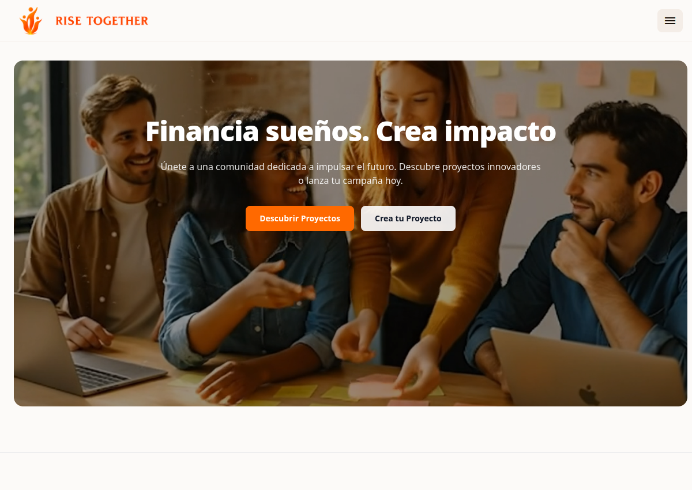

Desarrollo
Del frontend al backend.
Ideas que se convierten en soluciones.
ABIERTO A NUEVAS OPORTUNIDADES
Soy Santiago Cantero Torrents.
Desarrollador full stack y automatizador de procesos.
Uno desarrollo, diseño e IA para dar vida a tus ideas.
Desarrollo proyectos digitales donde el diseño, la estructura y la experiencia trabajan en coherencia. Me gusta crear sistemas modernos, sólidos y funcionales, cuidando cada detalle para transformar ideas en proyectos reales.
Me mueve la curiosidad: explorar la inteligencia artificial, simplificar procesos con automatizaciones y encontrar ese punto donde algo funciona tan bien como se ve.
Conoce mi GitHubDel frontend al backend.
Ideas que se convierten en soluciones.
Interfaces con intención.
Cada detalle tiene su porqué.
Menos tareas repetitivas.
Más tiempo para lo que importa.
Curiosidad por la IA.
Aprender, experimentar y mejorar.
Una tienda online de tecnología que conecta una interfaz en React con una API REST en Laravel y una base de datos MySQL. Permite explorar y filtrar productos, gestionar el carrito, realizar pedidos y consultar el historial de compras, con inicio de sesión mediante Google.
La experiencia se completa con cupones de descuento, reseñas y un panel de administración para gestionar el catálogo y los pedidos. Cada parte del recorrido de compra une el diseño de la interfaz con la lógica del negocio.
Chatbot y automatización: el proyecto incorpora un asistente conversacional y automatizaciones con n8n, combinando desarrollo web y flujos de trabajo automatizados para reducir tareas manuales.

Una plataforma de financiación colectiva que conecta ideas con personas dispuestas a impulsarlas. Mi proyecto de fin de grado, desarrollado en equipo para convertir iniciativas en oportunidades reales.
Mi aportación: creé la estructura de la web, definí su diseño visual y desarrollé el frontend, dando forma a una experiencia clara y coherente. También colaboré en el desarrollo de parte del backend, contribuyendo a integrar la interfaz con la lógica de la plataforma.
Un proyecto en equipo: desarrollado junto a Rafael de la Fuente López, Alejandro Caballero Luque y Juan Galisteo Marqués.
De una conversación a un plan de acción. IntelliTask AI transforma el audio de las reuniones en transcripciones, resúmenes y propuestas de tareas con responsables, prioridades y fechas, que se pueden revisar antes de aprobar.
Integra un tablero Kanban, notificaciones por correo y opciones para añadir los compromisos a Google Calendar. Su análisis de Power Skills explora aspectos como la escucha activa, la comunicación y el liderazgo a partir del diálogo.
Mi TFM del máster de IA y Power Skills: un proyecto que une inteligencia artificial, automatización y desarrollo de habilidades. Incluye un coach conversacional, simulaciones de situaciones profesionales y planes de mejora personalizados para llevar el aprendizaje a la práctica.
↳ Cada proyecto, una oportunidad de aprender algo nuevo.
Las herramientas cambian.
Las ganas de construir, no.
ESTRUCTURA
ESTILO & MOVIMIENTO
DESARROLLO
INTERFACES
BACKEND
CONTENIDO
DISEÑO WEB
DISEÑO VISUAL
AUTOMATIZACIÓN & IA
¿Buscas a alguien que se implique en tu próximo proyecto?